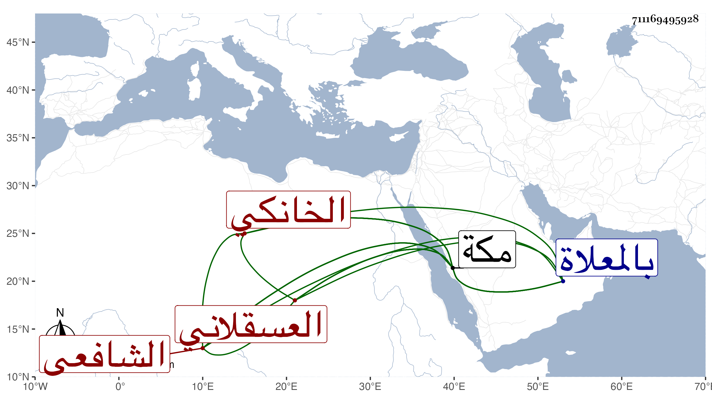

0902Sakhawi.DawLamic.ITO20230111-ara1.EIS1600.711169495928
Biography ID: 711169495928
186
أبو بكر بن محمد بن إبرهيم الزين بن أبي البركات العسقلاني الأصل الخانكي الشافعي نزيل مكة ويعرف بابن أبي البركات . حفظ القرآن وغيره وأخذ عن النور البوشي في الفقه والعربية ثم عن إمام الكاملية واختص به كثيرا في آخرين ولازمني بمكة وغيرها وكتب القول البديع وما شاء الله من تصانيفي وسمع علي ومني أشياء ومسه من البقاعي أذى بغير موجب معتمد وقطن مكة مدة وانتدب للوعظ بها وكان فاضلا خيرا عفيفا قانعا راغبا في الفائدة مائلا في الصالحين مع قوة نفس مات وقد جاز الستين أو قاربها في ليلة السبت ثالث شعبان سنة ثمان وثمانين بمكة ودفن بالمعلاة رحمه الله وإيانا .
